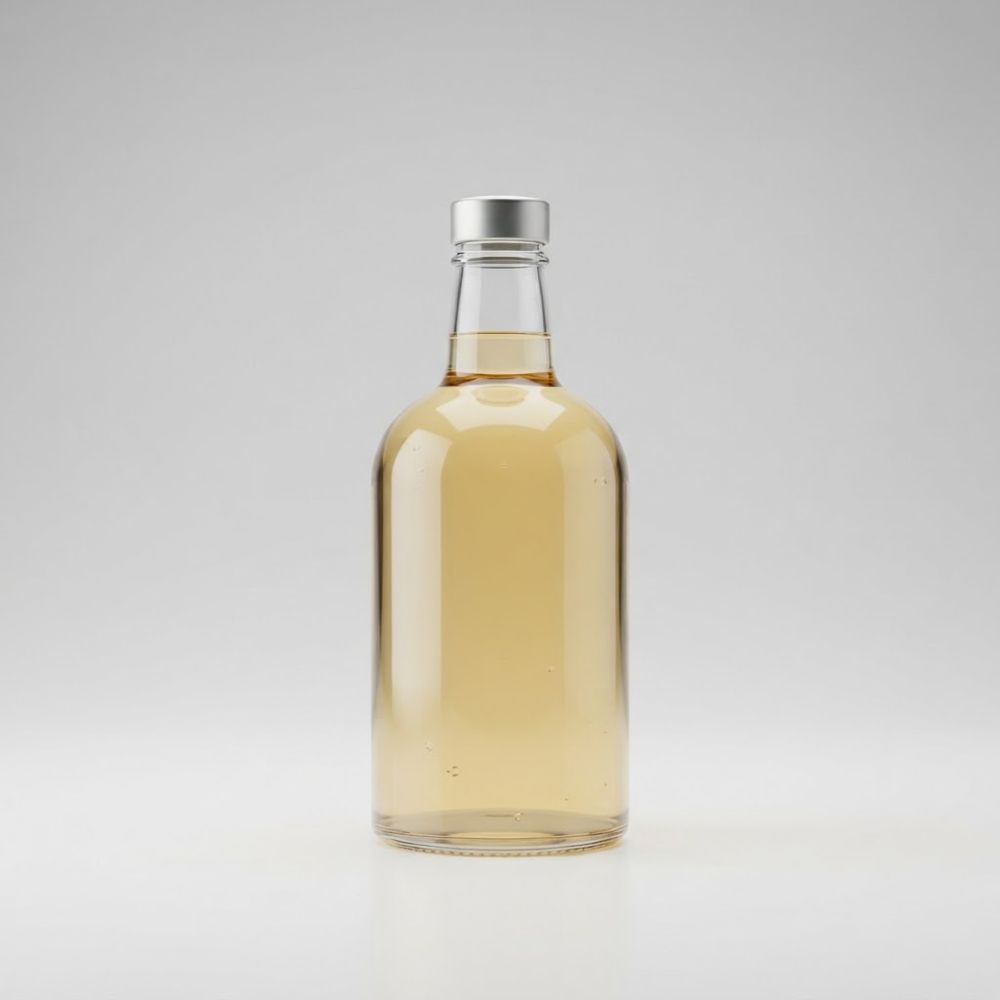
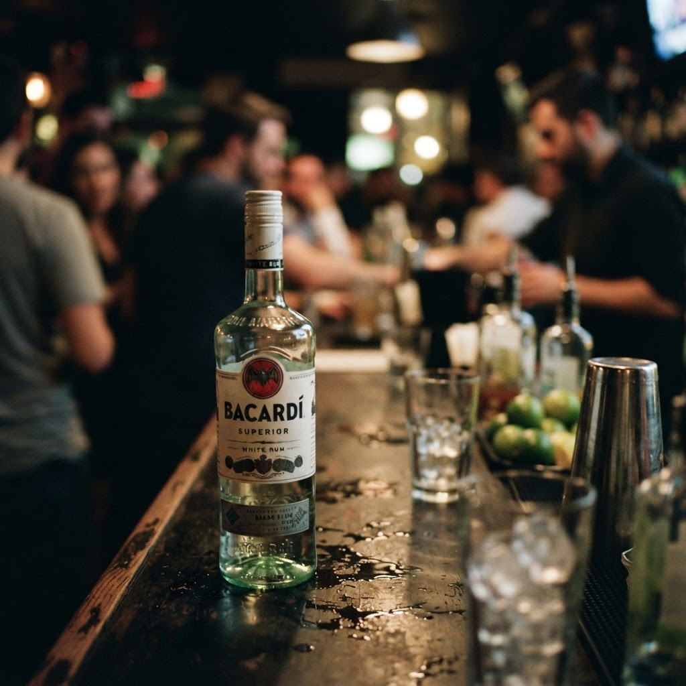

Сколько стоит ром бакарди цена в Кронштадте

Кронштадт живет обособленно, но жажда не ждет утренних витрин. Наша курьерская служба доставляет напитки по острову за час, невзирая на время суток и капризы погоды.
Сколько стоит ром бакарди цена в Кронштадте сегодня
Поиски ответа на вопрос, сколько стоит ром бакарди цена в Кронштадте, часто упираются в типичные признаки неисправности торговых площадок. Сравните сами: надежный сервис всегда прозрачен, в то время как сомнительные ресурсы маскируют итоговые суммы до последнего шага. Признак первый — отсутствие четкого каталога с актуальными позициями. Если сайт похож на лабиринт, где стоимость всплывает только при звонке менеджеру, вы имеете дело с накруткой. Признак второй — странная разница в цифрах по сравнению с рыночными стандартами. Когда ценник подозрительно низок, это не удача, а верный симптом подделки или истекающего срока годности. Мы же работаем иначе: открытая навигация, понятная логистика и отсутствие скрытых платежей за скорость. Неисправность системы заказа проявляется в том, что «ценник» меняется на глазах, превращаясь из привлекательной цифры в навязанную услугу. Выбирайте тех, кто ценит ваше время и не играет в прятки с прайс-листом. В нашем случае сервис работает как часы: вы видите честную стоимость, оформляете заявку и получаете желаемое через шестьдесят минут. Это не магия, а отлаженная работа профессионалов, которые понимают специфику островного региона и ценят доверие клиентов превыше мимолетной выгоды.
Признаки надежности и как не ошибиться
При выборе поставщика легко наткнуться на некачественный сервис, где под видом экономии скрывается отсутствие стандартов хранения. Сравнивая наш подход с недобросовестными конкурентами, важно выделить главное: контроль качества. Если бутылка имеет поврежденную этикетку или следы вскрытия, это критический сбой системы, который недопустим при профессиональной доставке. Мы проводим проверку каждой единицы товара, прежде чем она отправится в путь по Кронштадту. Другой важный момент — температура и условия транспортировки. Ром требует бережного отношения, а не «тряски» в багажнике случайного автомобиля. Профессиональная доставка подразумевает соблюдение всех норм, что радикально отличается от кустарных способов перевозки. Скепсис здесь уместен: если вам обещают доставку за копейки, но при этом экономят на упаковке и температурном режиме, результат предсказуем. Мы же ставим во главу угла качество продукта на финише. Сравнение здесь не в пользу тех, кто пытается продать дешевизну ценой вашего спокойствия. Наша задача — обеспечить безупречный досуг, а не просто переместить товар из точки А в точку Б.
Почему цена на ром может отличаться на разных сайтах?
Разница объясняется качеством дистрибуции и наценками за оперативную логистику. Низкий ценник у дилетантов часто скрывает риски контрафакта или нарушение условий хранения, тогда как стоимость у профи гарантирует оригинальность и легальность каждой позиции.
Итог
Итог всегда один: назвать следующий шаг покупателю — оформить заказ и получить его в течение часа в своём районе.
Заказать доставку
Оформите заказ сейчас: привезём за 40-60 минут в любой район Петербурга, круглосуточно.
Призыв
Сколько стоит bacardi ром купить спб в КронштадтеКронштадт изолирован от остального города, и поиск качественного алкоголя после полуночи здесь превращается в квест. Когда хочется просто отдохнуть, ожидание…